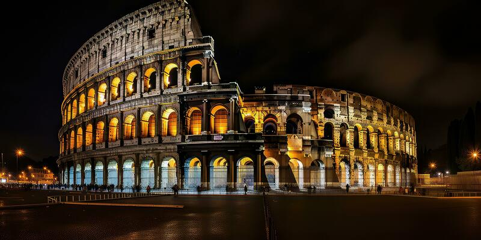

Cultura Italiana
Arte e História
A Itália é berço de algumas das maiores obras de arte e arquitetura do mundo. Do Renascimento ao Barroco, o país produziu mestres como Leonardo da Vinci, Michelangelo e Botticelli.
- Visite os Museus do Vaticano para ver a Capela Sistina
- Explore as ruínas romanas, incluindo o Coliseu e o Fórum Romano
- Admire as obras-primas na Galleria degli Uffizi em Florença
Música e Cinema
A Itália tem uma rica tradição musical, da ópera à música popular moderna. O cinema italiano também é reconhecido mundialmente, com diretores como Federico Fellini e Sergio Leone.
Moda e Design
A Itália é sinônimo de estilo, com marcas famosas como Gucci, Prada e Armani. O design italiano, de móveis a carros, é conhecido por sua elegância e inovação.